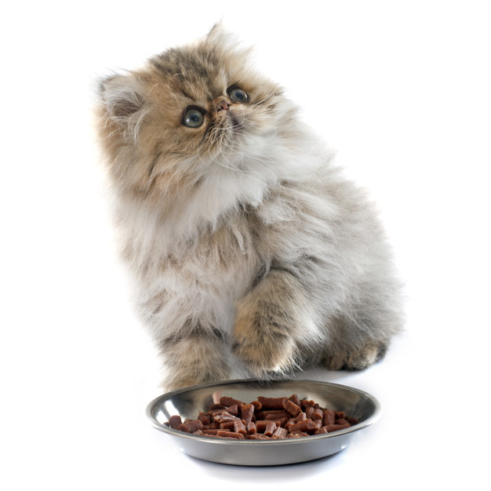
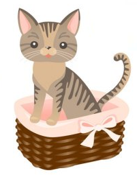
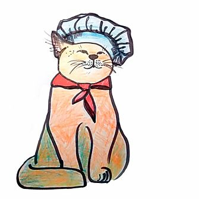

Тест на кота
Цей тест призначений для перегляду наскільки ти сумісний з певним котом Пройти тест.
Поради з утримання
Як правильно доглядати за котиком? Чи потрібні нашим пухнастим друзям фізичні активності? Як і за якими критеріями потрібно обирати лоток? На це і на багато інших питання я даю відповідь тут.
Здоров'я вашого улюбленця
Дуже важливо правильно доглядати за кішкою, якщо ви хочете, щоб вона прожила довго, до старості залишалась здоровою, активною та задоволеною життям. Для цього необхідно проводити профілактику різноманітних захворювань та ретельно слідкувати за гігієною домашнього улюбленця... Читати далі.
Гігієнічні процедури
Від дотримання базових правил гігієни також сильно залежить здоров’я вашої кішки: подбайте про те, щоб вчасно проводити обрізання кігтів, вичісування, миття, чистку вух та зубів... Читати далі.
Маєш ідею? Поділись нею з нами!